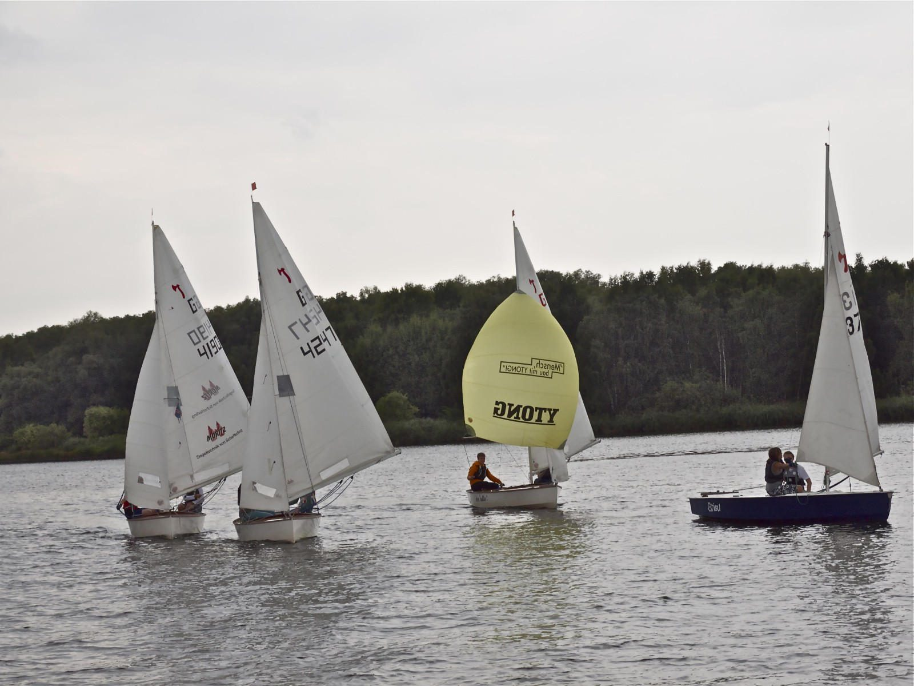

Segeln lernen –
der Spaß zuerst.
Ab etwa sechs Jahren auf vereinseigenen Booten. Einzige Voraussetzung: das Freischwimmerzeugnis.
Schnuppertraining
Drei Mal ausprobieren.
Alle Interessierten können bis zu drei Mal an unserem Training auf dem Wasser teilnehmen. Wer das Segeln für sich entdeckt hat und dabei bleiben möchte, bekommt alle Infos zur Mitgliedschaft bei unserer Jugendwartin.
Es erwarten euch eine umfassende Ausbildung in Theorie und Praxis, ein mehrtägiges Trainingszeltlager, Vereinswettbewerbe – und eine ganze Menge Spaß.
Ausbildung
Schritt für Schritt
aufs Wasser.
Optimist
Ab ca. 6 Jahren in der Einmannjolle – Anfänger und Fortgeschrittene trainieren gemeinsam, begleitet von Trainern und Sicherungsbooten.
Winter-Theorie
Umgang mit dem Boot, Seemannsknoten, Segeltheorie und Regeln für das Verhalten auf dem Wasser.
Jüngstenschein
Mit einer kleinen Prüfung bescheinigt er gute Kenntnisse im Umgang mit dem Boot.
Piraten & Scheine
Ab ca. 15 Jahren im Team auf der Piratenjolle, ab 16 weitere Segelscheine und der Sportbootführerschein See.
